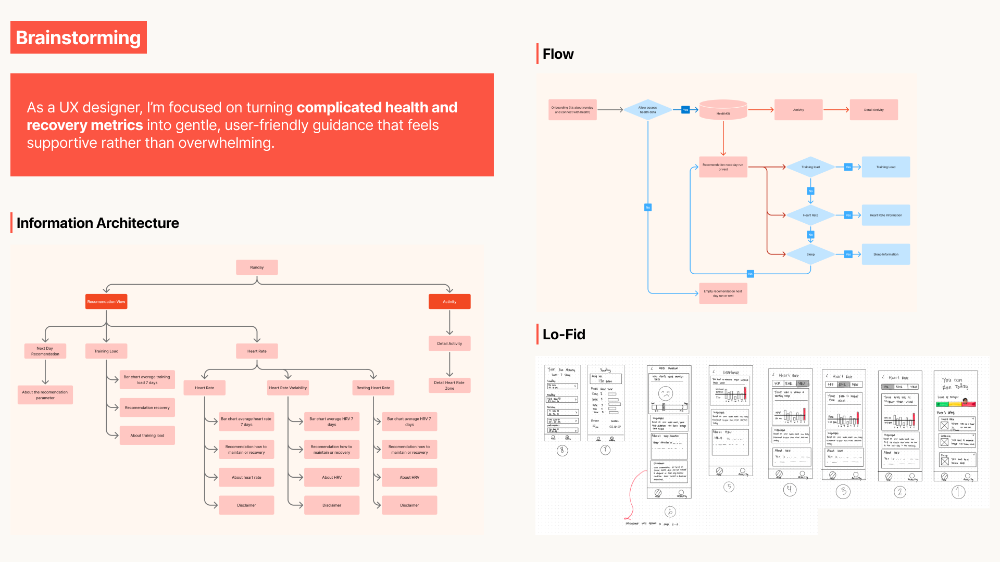

The project began with a recurring frustration. A close friend of mine wanted to start running, but she was stuck in a painful cycle: she would run, feel great, but then end up sick or exhausted for days after. She didn't know what was happening inside her body or how to choose the right day to push herself.
I realized she wasn't alone. Beginner runners often rely on "gut feeling," which is notoriously unreliable for gauging recovery. Without clear guidance, they face:
- A 29-58% higher risk of injury.
- Overtraining, which can slash performance by 20-30%.
- Burnout, making it impossible to maintain a consistent habit.
As the sole UX Researcher and Designer in a team of four coders, I had 22 learning days to solve this. I started with a 5W1H analysis to pinpoint exactly where beginners lose their way.
I investigated the "Big Five" of recovery metrics: TRIMP, HR, HRV, HRR, and Sleep. My goal was to understand how these contribute to Training Stress Balance (TSB)—the sweet spot where long-term fitness meets short-term fatigue. I found that while the data existed, it was too complex for a beginner to interpret while staring at a post-run screen.
To move from "raw data" to "actionable advice," I mapped out an Information Architecture that prioritized the Next Day Recommendation.
Instead of just showing a heart rate graph, the app needed to answer the runner's most urgent questions: "Should I run again tomorrow?" "Am I recovered enough?" The solution was a system that calculates a Fatigue Level (e.g., "Level C" or "50%") by comparing recent training loads with long-term baseline fitness.


My main challenge was turning intimidating health markers into "gentle guidance". I focused on three pillars:
- The Triadic Scheme: I used a triadic color palette—Red for Training Load, Orange for Heart Rate, and Blue for Sleep. This gives each category equal visual weight, making it easy for users to scan complex data without feeling overwhelmed.
- The "Supportive Nudge": Orange was chosen for heart rate metrics specifically to add a soft sense of energy and optimism, motivating the user while remaining empathetic.
- Native Familiarity: By following Apple’s Human Interface Guidelines and using SF Pro Typography, I ensured the UI felt like a natural extension of the user's phone. If they don’t have to "learn" the interface, they can focus entirely on understanding their body.
- Approachable Forms: I used rounded characters and shapes throughout the design system to keep the interface consistent and "easy to digest".
- Smart Recommendations: If the data shows minor fatigue, the app doesn't just say "Stop." It suggests a "Slower or shorter run" or "Quality sleep" to repair the body.
- Status at a Glance: Using high-fidelity cards, users can immediately see if their training load is "Just Right" or if they are "Within Normal Range," removing the guesswork from their fitness journey.
Want to dive deeper into the complete research framework, architecture, and high-fidelity screens? Download the full PDF case study below.
Download PDF